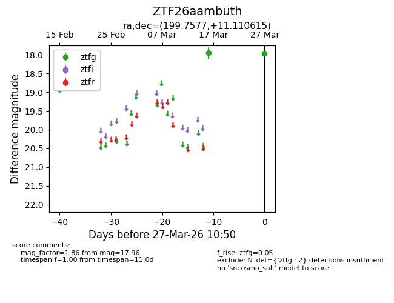
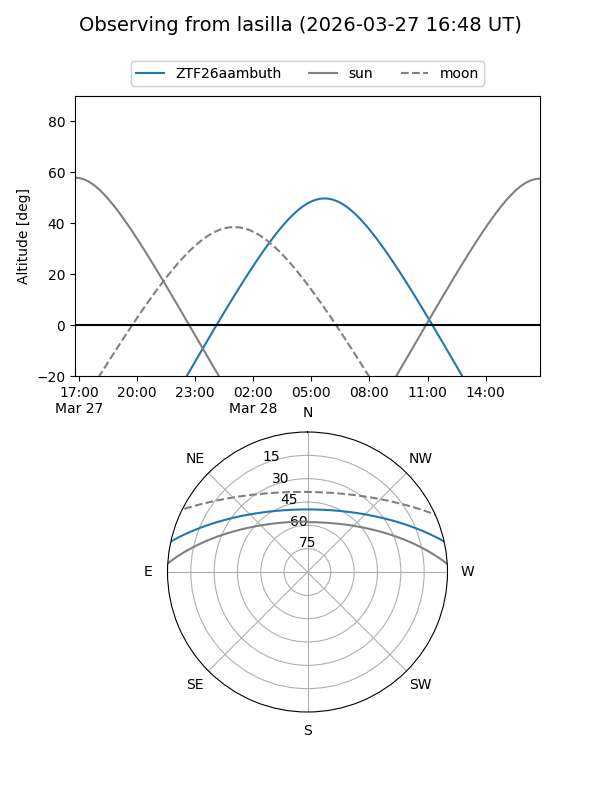
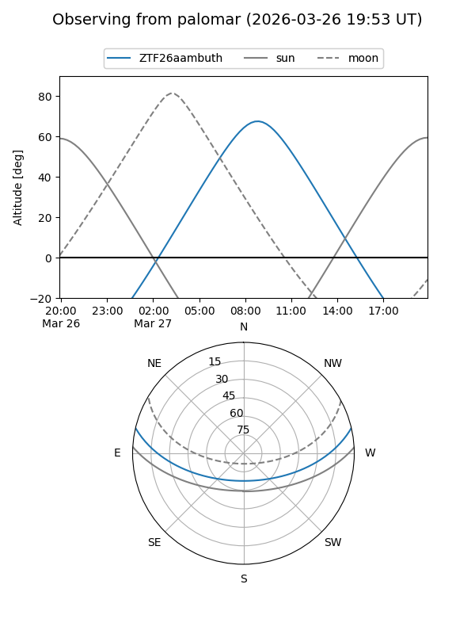

ZTF26aambuth
Target ZTF26aambuth at 2026-03-27 10:53
Aliases and brokers:
FINK: link
Lasair: link
ALeRCE: link
alt names
ZTF26aambuth (ztf,fink_ztf)
Coordinates:
equatorial (ra, dec) = 199.7577,+11.11062
equatorial (HMS+DMS) = 13:19:01.85,+11:06:38.21
galactic (l, b) = (326.3053,+72.71815)
Flags:
Photometry:
last ztfg=17.96
2 ztfg detections
Lightcurve

Visibility


Additional plots